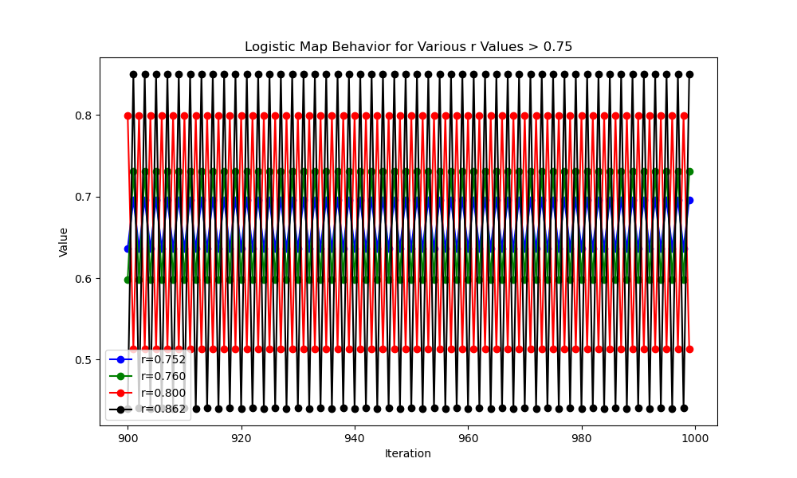
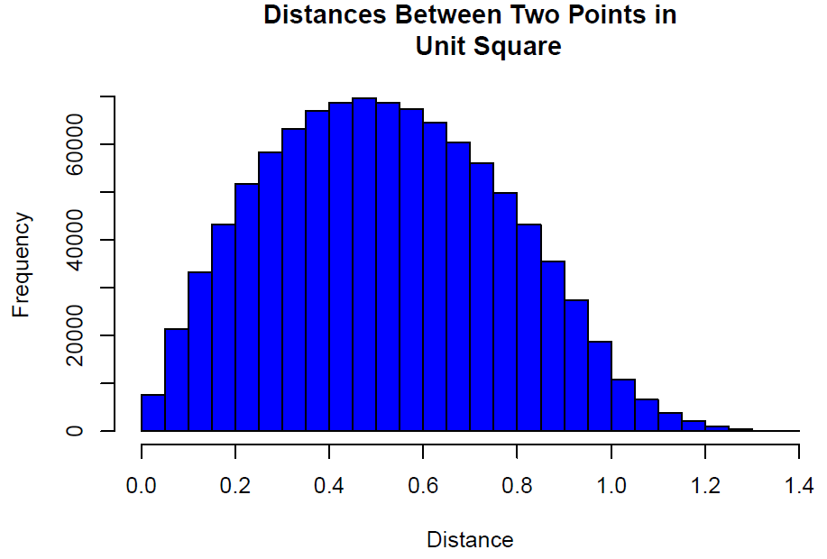

Here I did dimensionality reduction on a digits dataset using t-SNE.

Verifying that after early transient behavior, a simple population dynamics model between prey and predator alternates forever.

Verifying via R simulation that the Euclidean distance between two independent random points chosen uniformly inside the unit square resembles a Normal distribution.